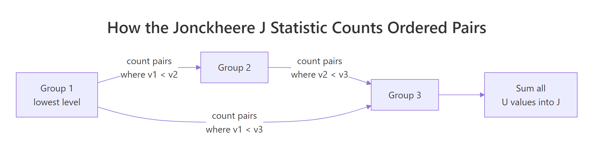
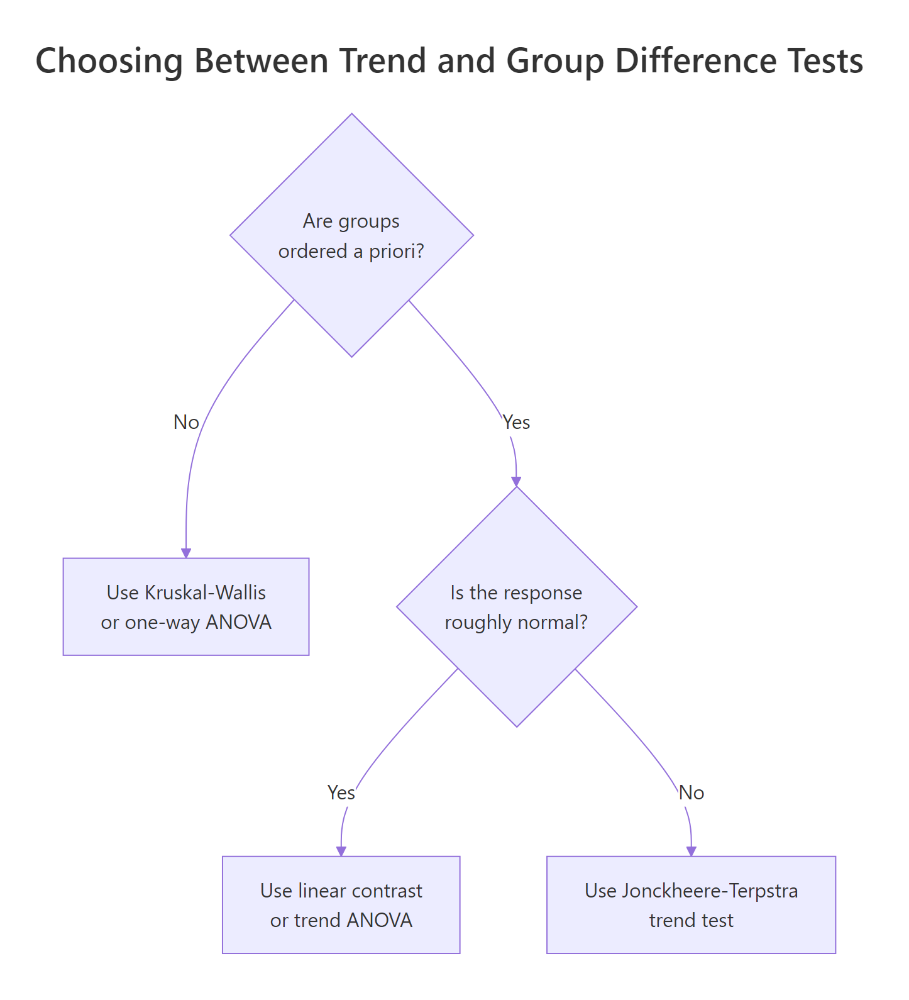

Jonckheere-Terpstra Test in R: Ordered Alternatives in k Samples
The Jonckheere-Terpstra test is a rank-based nonparametric test for an ordered trend across k independent groups. It answers a tighter question than Kruskal-Wallis: not just "do the groups differ?" but "do they trend monotonically in the order I predicted?"
What does the Jonckheere-Terpstra test answer?
Imagine a trial with placebo, 10 mg, and 20 mg of an anti-anxiety drug. Anxiety scores fall as the dose climbs. Kruskal-Wallis would tell you the three groups differ, but it ignores the ordering, so it spends degrees of freedom defending against patterns you don't expect. The Jonckheere-Terpstra test asks the more precise question: do scores trend monotonically with dose? You commit to a direction up front and pick up power for free.
Under the null hypothesis of identical distributions, J should land near E[J] = 150. We observed J = 23, which is 4.83 standard deviations below the mean. The one-sided p-value of 6.86e-07 is overwhelming evidence that anxiety scores decrease as dose increases, exactly the trend the trial was designed to detect.
clinfun::jonckheere.test() or PMCMRplus::jonckheereTest(). This tutorial builds the test from scratch in base R because it's the clearest way to see what the statistic actually does, and the code runs in this browser without installing extra packages.Try it: Make the drug effect even larger (say means c(80, 60, 40)) and rerun. Does the p-value shrink, grow, or stay the same?
Click to reveal solution
Explanation: With the means pulled further apart, every value in the higher-dose group falls below every value in the lower-dose group. J hits its floor of 0, z drops to -5.70, and the p-value collapses by another two orders of magnitude.
How does the test compute its statistic?
The Jonckheere statistic walks every pair of groups in your declared order and counts the "right-direction" comparisons. For each ordered pair (i, j) with i < j, count how many (a in group i, b in group j) pairs have b > a, adding 0.5 for ties. That count is U_{ij}. Sum every U_{ij} to get J.

Figure 1: How the J statistic sums U values across every ordered pair of groups.
Under the null hypothesis of identical distributions, the labels are exchangeable, so every permutation of group labels is equally likely. That gives a closed-form mean and variance:
$$E[J] = \frac{N^2 - \sum_i n_i^2}{4}, \qquad \mathrm{Var}[J] = \frac{N^2(2N+3) - \sum_i n_i^2 (2n_i + 3)}{72}$$
Where:
- $N$ = total sample size
- $n_i$ = size of group $i$
- $J$ = the observed statistic from the formula above
Standardise to z = (J - E[J]) / sd(J) and compare to a normal distribution. Let's wrap the whole thing in a reusable function so we can drop the per-pair bookkeeping.
The function returns a named list: J, z, p.value, the chosen alternative, plus E[J] and Var[J] so you can sanity-check the math. Now let's run it on a tiny dataset where you can verify the count by eye.
E[J] = 13.5, J = 26, so the observed statistic is exactly twice what we'd expect under the null. The z-score of 2.78 lands in the upper tail, and the one-sided p-value of 0.0027 rejects equality at the 1% level. By inspection, every "mid" value beats two of three "low" values, every "high" value beats every "mid" and "low" value, so most of the maximum possible J is realised.
Try it: Add one tie to x_small (change the last value from 11 to 7) and rerun. By how much does J change?
Click to reveal solution
Explanation: Replacing 11 with 7 removes some pairs where high > mid and adds a tie with one of the mid values. J drops from 26 to 22.5: the tie contributes 0.5 instead of 1, and we lose two clean wins. The p-value rises from 0.003 to 0.023.
How is the trend test different from Kruskal-Wallis?
Kruskal-Wallis lumps every departure from equality together: any pattern of group medians, ordered or shuffled, contributes equally. The trend test sniffs only for monotone movement in the direction you specified. When the trend is the truth, J-T has more power. Run both on the dose data to see them agree, then run a marginal example where the trend is real but small, and J-T flexes.
Both flag a difference, but J-T's p-value is two orders of magnitude smaller. The trend-aware test exploits the structure that Kruskal-Wallis throws away. Now build a 5-group dataset with a small steady drift, where Kruskal-Wallis is barely significant.
Even on this very modest 8-point drift across 5 groups, J-T's p-value is roughly 80x smaller than Kruskal-Wallis's, because every adjacent step contributes signal in the same direction.

Figure 2: Choosing between J-T, Kruskal-Wallis, and ANOVA based on ordering and normality.
levels = c("10mg", "0mg", "20mg") by accident, the test interprets that order as your hypothesis. Always set levels deliberately and check levels(your_factor) before running the test.Try it: Run jt_test(anxiety, dose, "greater") on the original dose data. Why is the p-value almost exactly 1?
Click to reveal solution
Explanation: The greater alternative tests whether anxiety increases with dose. The data move strongly the other way, so the upper-tail p-value Pr(Z >= -4.83) is essentially 1. The lesson: pick alternative to match your scientific hypothesis.
What are the assumptions and when should you use it?
Five assumptions matter. Check them before you reach for the test, not after the p-value disappoints.
- Ordinal independent variable with at least 3 levels. With k = 2 you should use
wilcox.test(); J-T reduces to the Mann-Whitney U test in that case but with extra ceremony. - Continuous or ordinal response variable. Strict categorical responses need a different family of tests.
- Independent observations. Each subject contributes one value. Repeated measures need the Page or Friedman test.
- Same distribution shape across groups, differing only in location. Variance shifts can register as trend even when locations are equal.
- Direction of the alternative chosen a priori. You cannot peek at the data and then declare which order is "natural"; that inflates the type I error.
The fourth assumption is the one most people miss. Demonstrate it by running the test on a pure variance shift, where group means are identical but spread grows.
Pure variance growth doesn't move J in any consistent direction, so the test correctly returns a non-significant p. But asymmetric outliers in the higher-variance group could flip that, which is why the equal-shape assumption matters.
wilcox.test(). J-T technically works at k = 2, but the Mann-Whitney U is the standard tool there and has cleaner exact-test machinery in base R.Try it: Drop one dose level and run J-T on just the 0 mg and 20 mg groups. Compare the p-value to wilcox.test(anxiety[dose != "10mg"] ~ dose[dose != "10mg"], alternative = "greater").
Click to reveal solution
Explanation: Both reach the same conclusion (overwhelming evidence the 0 mg group runs higher than the 20 mg group). The minor numerical difference comes from wilcox.test() using a continuity-corrected p-value by default; jt_test() does not.
How do you handle ties and small samples?
Three flavors of p-value, three places to use them.
| Method | When | What it costs |
|---|---|---|
| Exact | n < 100, no ties | Enumerates every group-label permutation. Tractable only for small n. |
| Permutation | Any size, ties allowed | Randomly shuffles labels nperm times. 2000-10000 reps usually sufficient. |
| Asymptotic | Large n, normal approximation | One closed-form z-score. Cheap, slightly off when n is small or ties are heavy. |
Build a permutation routine and compare its p-value to the asymptotic one on a marginal dataset where the difference matters.
The two p-values agree to within 0.003. They will not always be this close. Heavy ties or small per-group sample sizes pull the asymptotic estimate further from the true permutation answer; that's when you should report permutation results.
sqrt(0.01 * 0.99 / nperm), so 4000 reps gives ±0.0016, plenty for headline reporting.Try it: Drop nperm to 200 and rerun. The point estimate jiggles, sometimes by ±50%. Run it three times to see.
Click to reveal solution
Explanation: With only 200 permutations, the Monte Carlo error swamps the signal: the same data give p-values ranging across an order of magnitude. Always check that nperm is large enough to stabilise the estimate before publishing it.
How do you choose increasing, decreasing, or two-sided?
Three alternatives map onto three scientific stances.
alternative = "greater": the response goes up with the group index. Pick this when your hypothesis predicts an increasing trend.alternative = "less": the response goes down. Pick this when you expect a decreasing trend.alternative = "two.sided": you suspect a monotone trend but don't know the direction. Use this only when the literature is genuinely split.
Here are all three on the dose dataset to see how they relate.
The two-sided p is roughly 2 * p_less, as expected when z is far from zero. The greater p sits at 1 because the data trend the opposite way.
Try it: Pick the correct one-sided alternative for the marginal mx/mg dataset above (means rise from 0 to 0.4 to 0.8). Justify your choice in one sentence.
Click to reveal solution
Explanation: Means increase from low to high, so the alternative is "greater". The one-sided p of 0.00997 is half the two-sided value, reflecting the directional commitment.
Practice Exercises
Exercise 1: Ozone trend across summer months
Use airquality (built into base R). Filter to May, June, and July, drop missing values, and test whether ozone rises monotonically across these three months. Report J, z, and p.
Click to reveal solution
Explanation: Median ozone rises from 18 (May) to 23 (June) to 60 (July). The greater alternative confirms a strong upward trend with p ≈ 4e-06. (If you extended through August and September, the trend reverses, and the test loses power because monotonicity breaks.)
Exercise 2: Power comparison vs Kruskal-Wallis
Write a function power_jt(n_per, delta, k, reps) that simulates reps datasets with k groups of n_per observations each, group means stepping by delta, residual SD = 5. Run both J-T (one-sided) and Kruskal-Wallis on each dataset. Return the share rejecting at α = 0.05 for each test.
Click to reveal solution
Explanation: With 4 groups of 15 and a step of delta = 2 (residual SD = 5), J-T rejects 97% of the time while Kruskal-Wallis rejects 80%. The 17-point gap is the directional commitment paying off.
Complete Example
A four-arm clinical trial: placebo, 5 mg, 10 mg, 20 mg of an anti-anxiety medication, 15 patients per arm, post-treatment anxiety scores. Goal: confirm a monotone dose-response relationship.
J-T returns p ≈ 1e-11, Kruskal-Wallis returns p ≈ 2e-08. Both reject the null, but J-T is roughly 1000x more confident, because it credits the consistent monotone drop. The permutation p of 0.0000 (zero out of 5000) confirms the asymptotic answer is in the right ballpark; you'd report it as < 1/5000 = 2e-04. Visualise with the boxplot, report both tests, and let the directional p carry the headline.
Summary
- What it tests: monotone trend in medians across k ordered groups, against the null of identical distributions.
- What it returns: a J statistic, a z-score, a one- or two-sided p-value.
- When to use it: ordinal grouping known a priori, k ≥ 3, hypothesis is directional.
- When NOT to use it: unordered groups (use Kruskal-Wallis), repeated measures (use Friedman), k = 2 (use
wilcox.test). - Ties: weight at 0.5; with heavy ties, prefer permutation p.
- Effect size: there is no standard one; report group medians plus the z-score for context.
| Decision | Test |
|---|---|
| 2 independent groups | wilcox.test() |
| ≥3 unordered groups | kruskal.test() |
| ≥3 ordered groups, directional | jt_test() (or clinfun::jonckheere.test) |
| ≥3 groups, repeated measures | friedman.test() |
| Normal residuals, ordered groups | linear contrast in aov() |
References
- Jonckheere, A. R. (1954). A distribution-free k-sample test against ordered alternatives. Biometrika, 41(1/2), 133–145.
- Terpstra, T. J. (1952). The asymptotic normality and consistency of Kendall's test against trend. Indagationes Mathematicae, 14, 327–333.
- Hollander, M., Wolfe, D. A., & Chicken, E. (2014). Nonparametric Statistical Methods, 3rd ed., Chapter 6. Wiley.
- Venkatraman, E. S. clinfun package,
jonckheere.test()reference. Link - Pohlert, T. PMCMRplus package,
jonckheereTest()reference. Link - Signorell, A. DescTools package,
JonckheereTerpstraTest()reference. Link - Wikipedia, Jonckheere's trend test. Link
Continue Learning
- Kruskal-Wallis Test in R: the unordered cousin of J-T; use it when groups have no natural sequence.
- Mann-Whitney U Test in R: the 2-group special case; what J-T reduces to when k = 2.
- Friedman Test in R: the trend-aware test for repeated-measures designs.